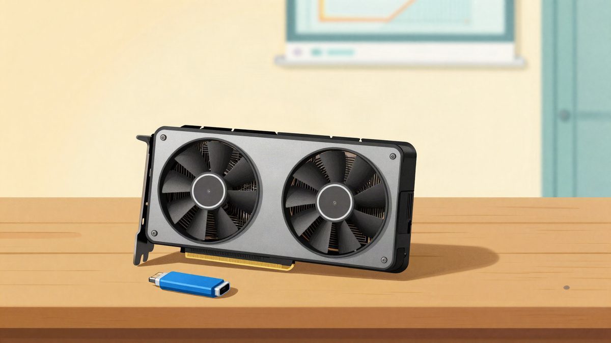

Switch 2 jailbreak dobio je alat nx2-relink: dumpane igre sada se mogu pokretati na hakiranim konzolama
Haker Olmectron objavio je nx2-relink, alat koji dumpane igre za Switch 2 pretvara u homebrew program za jailbreakane konzole. Alat je u ranoj fazi i eksperimentalan, a konzola se zbog njega može briknuti. Nintendo se za sada nije službeno oglasio.
Prvi jailbreakovi za Nintendo Switch 2 pojavili su se prije nešto više od mjesec dana, a sada je stigao i alat za pokretanje dumpanih igara. Haker Olmectron objavio je nx2-relink, koji dumpane igre za Switch 2 pretvara u homebrew program što se može pokrenuti na jailbreakanoj konzoli. Time je otvoren put prema piratizaciji igara, a Nintendo i njegovi odvjetnici vjerojatno će je teško zaustaviti.
Prema pisanju stranice GBAtemp, nx2-relink je rani, eksperimentalni software. Kompatibilnost je za sada ograničena, a konzola se zbog alata može "briknuti" (postati neupotrebljiva).
Što alat radi, a što ne
Olmectron tvrdi da alat ne sadrži igre, ključeve ni Nintendove file-ove i da ih neće ni nabaviti za korisnika. Strogo gledano, korištenje alata onako kako je zamišljen, za sigurnosne kopije igara koje korisnik posjeduje i sam je dumpao, nije nezakonito. Svaka jailbreakana konzola ipak riskira zabranu pristupa Nintendovim online servisima.
Autor članka u GamesRadaru ističe da, koliko može zaključiti, ništa ne priječi ljude da preuzmu tuđe dumpove i pokrenu ih na svojoj konzoli, a to je upravo piratizacija.
Claude i brzina razvoja
Veliki doprinos razvoju nx2-relinka dao je Claude, kao i kod mnogih nedavnih proboja u sceni konzolskog hakiranja i homebrewa. Claude je znatno ubrzao rad programera na probijanju sigurnosnih zaštita konzola.
nx2-relink nije jedini takav alat u zadnja 24 sata. Drugi developer je dan prije prikazao konzolu koja pokreće dumpanu verziju igre Donkey Kong Bananza, što je opisao kao otvaranje vrata novoj eri hakova za Switch 2. Autori dosadašnjih alata za dumpanje upozoravaju da bi se piratiziranje igara moglo naglo proširiti.
Nintendo je vratio SmileBasic 4 u eShop nakon što je bio iskorišten za jailbreak Switcha 2. Za sudjelovanje u jednom od tih jailbreakova bila je potrebna kupnja u eShopu od 25 dolara.
Izvor: GamesRadar
Povezani članci
- PS5 je dobio Linux i Steam Mode: projekt podržava 4K 60 Hz i 1440p 120 Hz30. listopada 2026.
 Amazon je za oko 6,4 milijarde eura preuzeo Decartovu optimizacijsku tehnologiju25. studenoga 2026.
Amazon je za oko 6,4 milijarde eura preuzeo Decartovu optimizacijsku tehnologiju25. studenoga 2026.
RTX 3080 je dobio DLSS frame generation: mod od 7 MB navodno daje do 50 % više FPS-a14. studenoga 2026.